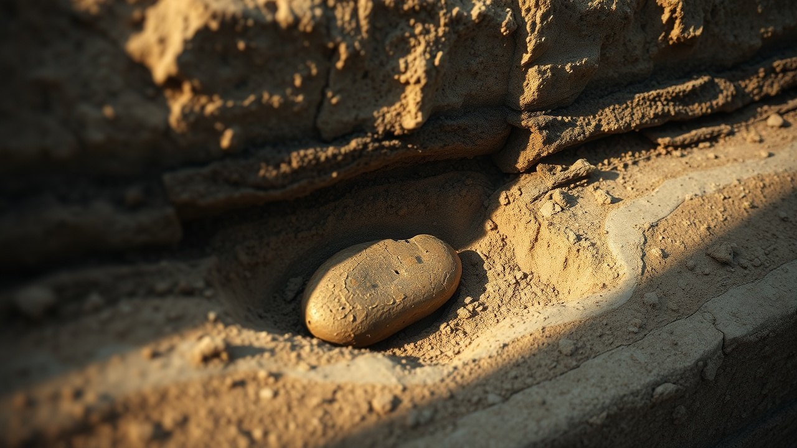

In 2021, a team of scientists published a paper in Nature's Scientific Reports arguing that a Bronze Age city in the Jordan Valley was flattened in a single morning by a cosmic airburst. The evidence was so extreme most readers assumed it was a mistake. It sits exactly where the Book of Genesis places Sodom.
The city is called Tall el-Hammam. It lies 12.6 kilometers northeast of the Dead Sea, in the Amman Governorate of Jordan. The destruction layer inside it is a meter and a half thick, and what is buried in that layer should not exist inside a mudbrick town.

The Site Nobody Wanted to Talk About
Tall el-Hammam covers roughly 36 hectares in the lower Jordan Valley, with a 30-meter upper mound and a walled lower town sprawling to the southwest. Occupation began in the Late Chalcolithic, around the 4th millennium BC, and the city reached its maximum extent in the Middle Bronze Age behind massive fortifications.
Steven Collins of Trinity Southwest University has led excavations at the site since 2005. His team has documented mudbrick ramparts, palace-grade architecture, and thousands of residents packed inside a city that dominated the northern Dead Sea plain for centuries.
Then, around 1650 BC, that city vanished. Not slowly. Not through siege. In one event violent enough to shear the upper stories of mudbrick walls down to their foundations and scatter them across the tell.
The 2021 Paper Nobody Could Explain Away
The paper is titled "A Tunguska sized airburst destroyed Tall el-Hammam a Middle Bronze Age city in the Jordan Valley near the Dead Sea." It ran in Scientific Reports on September 20, 2021, authored by Ted Bunch, Malcolm LeCompte, Allen West, and 18 co-authors from institutions including Northern Arizona University, Elizabeth City State University, and the Comet Research Group.
Their measurements are not vague. The destruction layer inside the tell runs approximately 1.5 meters thick. Inside it: pottery sherds melted into glass on their outer surface while the inner surface remained unfired. Mudbrick fragments fused into slag. Diamond-like carbon spherules.
The temperature required to produce those signatures sits above 2000 degrees Celsius. That is hotter than any wood fire, hotter than any Bronze Age forge, hotter than the surface of a lava flow. It is the temperature range of nuclear detonations and cosmic impacts.
Shocked Quartz and Shattered Bone
The team recovered grains of quartz inside the destruction layer with planar deformation features. Shocked quartz forms only under pressures above 5 gigapascals. On Earth, it appears in two places: nuclear test sites and confirmed meteor impact zones like the Chicxulub crater in Yucatan.
Human remains inside the layer are not intact. The paper documents disarticulated skeletons, skulls sheared in half, femurs snapped and hurled several meters from their torsos. Some bone fragments show the same charring pattern as the melted pottery.
The researchers reconstructed the event as an airburst of a stony meteor roughly 50 to 60 meters across, detonating a few kilometers southwest of the city at an altitude around 4 kilometers. The blast wave arrived at Tall el-Hammam moving at hurricane-plus velocities carrying a thermal pulse that vaporized clothing, hair, and the outer surface of ceramics.
Pottery melted into glass on one side while the clay behind it stayed unfired. That happens in a fraction of a second, or it does not happen at all.
The Salt That Killed the Valley
The strangest detail is not the glass. It is the salt. Soil samples across the destruction zone and out into the surrounding agricultural land carry an anomalous spike in salt concentration, high enough to render the fields unable to sustain cereal crops.
The airburst reconstruction accounts for this. A low-altitude detonation over the northern Dead Sea would have vaporized hypersaline brine and lofted it as an aerosol that fell out across the plain. The blast salted the earth in the most literal sense.
The archaeological signal that follows is silence. Tall el-Hammam, Tall Nimrin, Tall Iktanu, Tall Kafrayn, and roughly a dozen other settlements around the northern Dead Sea plain were abandoned. The gap in occupation runs approximately 600 years before permanent resettlement resumes in the Iron Age.
Genesis 19 Read as a Field Report
The Book of Genesis places Sodom on the plain (kikkar) near the Dead Sea, in a well-watered agricultural belt described as "like the garden of the Lord." That description matches the Bronze Age Jordan Valley before 1650 BC and matches nothing about the salt flats that came after.
Genesis 19 describes fire and brimstone raining from the sky, the destruction of the cities of the plain in a single morning, and the transformation of Lot's wife into a pillar of salt when she looked back at the burning city. Read alongside the Bunch et al. paper, the account reads less like myth and more like an eyewitness attempting to describe an airburst without the vocabulary for one.
Mainstream archaeologists reject the identification. The Wikipedia entry for Tell el-Hammam notes the controversy openly, listing the Sodom hypothesis as "rejected by mainstream archaeologists" while cataloguing the Scientific Reports paper in its references. The category tag "Articles intentionally citing retracted publications" appears on the page, though the airburst paper itself has not been retracted as of this writing. Corrections were issued in 2022 addressing statistical methodology, not the core physical evidence.
What the Physical Layer Actually Says
Strip away the theology and the counter-theology. What remains is a meter and a half of debris containing melted pottery, shocked quartz, meltglass, diamonoids, and shattered human beings, buried under a plain that was uninhabitable for six centuries.
Three things are true simultaneously. The city existed. The city was destroyed by something operating at temperatures and pressures no Bronze Age agent could produce. The city sits where the oldest surviving text about Sodom says Sodom was.
The debate is not about whether Tall el-Hammam was destroyed by fire from the sky. That is now a published, peer-reviewed conclusion with samples in the collections of the Comet Research Group and material referenced through Northern Arizona University. The debate is about what to call the city while it burned.
The residents of Tall el-Hammam had roughly six seconds between the flash and the shockwave. Long enough to look up. Long enough to see something in the sky over the Dead Sea getting brighter than the sun. Not long enough to run.
Genesis says Lot was warned. Genesis says a messenger arrived in the city the night before and told him to leave before dawn and not to look back. If the physical layer is real, and it is, then the warning is the part of the story that becomes interesting. Who told him it was coming? And how did they know?
Before you go
7 books the Vatican doesn't want you reading. Free PDF — the texts they cut, with sources. Joined by 140+ Inner Circle members.
No spam. Unsubscribe anytime.
Go deeper
The Hidden Canon, Vol. I — Enoch. Jubilees. Thomas. Mary. Judas. 90 pages, 14 chapters, every receipt cited. The books your Bible quietly removed.
Read the Canon →Books that informed this investigation
As an Amazon Associate, Hidden Epoch earns from qualifying purchases. Cost to you: nothing.
Research safely
The VPN we use to research without being tracked. First 3 months free.
Get NordVPN →